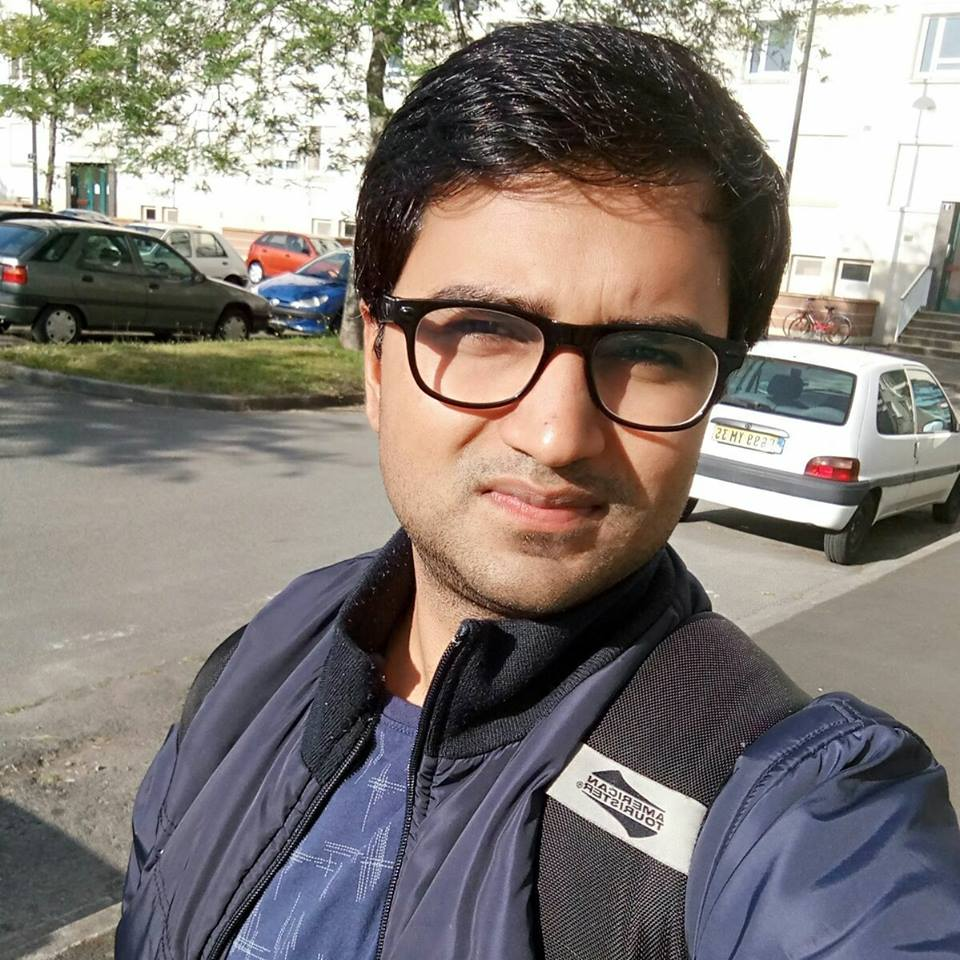

Sunil Jaiswal
Biography
I am currently working as a Sr. Computer Vision Engineer in K|Lens, GmbH (Germany).
K|Lens provides an unique lenses which allows to record depth information on top of color information. Our lens
works with any full format DSLR/Mirrorless camera. In KLens, I am responsible for desigining algorithms and works in the area of 3D computer vision, image processing and Machine Learning.
Prior to this, I obtained my Ph.D. in The Hong Kong University of Science & Technology (HKUST). During my Ph.D.,
I was a visiting a research scholar in the Visual Analytics and Imaging lab at Stony Brook University, New York, and SUNY Korea with the host of Prof. Klaus Mueller for a year.
I also visited Technicolor R & D, Rennes, France as a research internee and have been awarded "Best Research and Innovation Award'2017".
. My research interests
were Color/Multispectral Imaging, CT Artifact Reduction, Deep-Learning, Image Quality Assesment.
Before that I received my Bachelors of Technology (Undergraduate) in Electronics and Communication Engineering, from The LNM Institute of Information Technology
(LNMIIT), Jaipur, India in 2012.
I am fortunate enough to work with great supervisors:
Prof. Oscar Au (Former Prof. at HKUST) : Multispectral Imaging, Deep Learning (Aug'2012- Dec'2014)
Prof. Klaus Mueller (Stony Brook University, NY, USA) : Multispectral Imaging, CT Imaging, Deep Learning (March'2015 - current)
Dr. Bordes Philippe, Dr. Franck Galpin, Dr. Racape Fabie: Technicolor R & D, Rennes, France : Deep Learning (June'2017 - current)
Prof. Lu Fang (HKUST, HK and USTC, China) : Multispectral Imaging, Deep learning (December'2015 - current)
Prof. Michal Kozubek and
Dr.David Svoboda (CBIA) Brno, Czech Republic : 3D BioMedical imaging (June'2011 - August'2011)
Prof. Anil Tiwari (IIT, Jodhpur, INDIA) : Image/Video Interpolation and Compression (June'2010 - August'2012)
Important Links : Research Experience, Publication List, [Short CV], [Long CV], Google_scholar